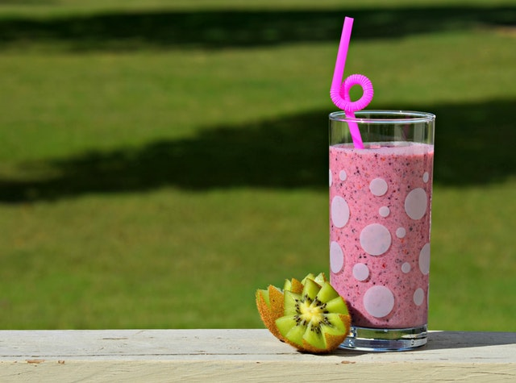

Programação Genérica

Na programação genérica, usualmente criamos operações de alto-nível, as quais podem ser aplicadas a diferentes tipos de valores. Exemplos típicos são coleções (pilhas, filas, ...). Por exemplo, podemos empilhar inúmeros tipos de valores (números, strings, pratos, carros, etc). A programação é genérica pois o funcionamento das operações para o tipo pilha independem dos tipos de valores manipulados. Sem utilizar exemplos óbvios como pilha de pratos, copos e panelas, podemos fazer uma analogia do comportamento genérico destes tipos com o preparo de uma vitamina. Nestas, há uma idéia geral de preparo, que consiste em se levar ao liquidificador um líquido (água, leite ou algum suco), eventualmente algo adocicado (açúcar ou mel), e as frutas, verduras e/ou legumes, das quais se deseja preparar a vitamina. Observe que o preparo geral independe de quais ingredientes serão utilizados, o que caracteriza o comportamento genérico.